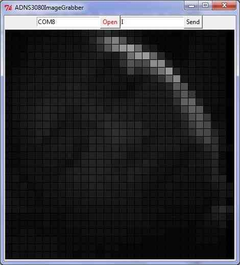

ARCHIVED:Mouse-based Optical Flow Sensor (ADNS3080)¶
Note
This page is archived and the device is no longer supported in ArduPilot software
[copywiki destination=”copter,plane,rover”]
Copter-3.2.1 on APM2.x boards included limited support for the mouse sensor based Optical Flow sensor using the OF_Loiter flight mode.
Warning
This sensor is not supported in recent versions of the firmware. Instead please use the PX4Flow sensor.


Connecting the sensor to the APM2.5¶
Connect VCC, GND, MISO, MOSI, SCLK and NCS pins as shown in the diagram below
Default mounting is lens pointing down, pins forward

Cut and resolder the MISOLVL jumper on the back of the board to switch the MISO pin to work on 3.3v. This is critical to ensure the optical flow sensor does not interfere with the MPU6000.

Connecting the sensor to the APM2¶
Power, GND, NCS pins should be attached to A3
MISO, MOSI and SCLK pins should be directly soldered to the pins shown
Default mounting is lens pointing down, pins forward

Connecting the sensor to the APM1¶
Directly solder wires to the top of the Oilpan as shown below
Default mounting is lens pointing down, pins forward

Testing the sensor¶
Upload the test sketch to the APM:
If using an APM2, you can download the hex file from here and then upload to your APM2 using the Mission Planner’s INITIAL SETUP | Install Firmware | Load custom firmware link
If using an APM1 you must open the AP_OpticalFlow_test.pdesketch in the arduino IDE, compile and upload to your APM1
Connect to your APM with the Serial Monitor or AP Mission Planner Terminal
type ‘c’ to ensure that the sensor is responding to the APM
type ‘m’ and move the camera back and forth and check that x,y values change. If they do not change, modify the focus of the lens by turning it left or right.

Capturing an image from the sensor¶
In order to check that you have the lens properly focused you can capture an image directly from the sensor and display it using a simpler viewer written in Python.
{kind=link}
Upload the AP_OpticalFlow_test.pde to the APM (see above)
Install Python 2.7 (or later version) from the official python site
(For windows users, for compatibility with pyserial, you should install the 32bit versioneven if you are running 64bit windows)
Install PySerial 2.5. The Windows package can be downloaded from here.
Start the Python IDLE editor
File, Open, …/arduino-0022/libraries/AP_OpticalFlow/examples/ADNS3080ImageGrabber/ADNS3080ImageGrabber.py
Run, Run Module - the Python Shell and then ADNS3080ImageGrabber applications should appear
On the ADNS3080ImageGrabber screen, change the default com port to the port connected to your APM and press Open
Push the Send button to start/stop grabbing images from the sensor (a new image should appear every 2 seconds)
Note 1: After capturing images, you will need to reset the sensor (i.e. plug/unplug it) to restore it to the normal motion capture mode.
Note 2: you should see the AP_OpticalFlow_ADNS3080’s menu and any errors appear in the Python Shell.
How it works¶
The mouse sensor returns the average movement (in the x and y directions) of surface features that it sees. A single pixel move will not cause the sensor to return “1”. It will return a higher value around 5. This value is referred to as the scaler below. In the example below, the value returned would be about 1.6 ( (-5+5+5) / 3)
{kind=link}
Sensor’s x and y values can be converted to real distances based on altitude
In order to convert values from the sensor to real distances moved, we need to take into account the altitude. This is necessary because as you can see from the two pictures below, if we have two quads moving the same distance, but one at a low altitude, the other at a higher altitude, the lower quad will see surface features appear to move further and this will result in a higher optical flow values

{kind=link}
We compensate for vehicle roll and pitch changes
Change in the vehicle’s roll and pitch will also cause changes in the x and y values returned by the sensor. Unlike the lateral movement calculations these are not dependent upon the distance of the visible objects. In the picture below you can see that as the quad has rolled 10 degrees but both flowers have moved from the center of the camera’s view in the 1st pic to the edge of the view in the 2nd pic.
{kind=link}
The expected change in sensor values can be calculated directly from the change in roll and pitch given the formula below. We subtract these expected changes from the real values returned by the sensor.
{kind=link}
Once we have the x/y movements we can integrate these values over time with the current yaw to arrive at an estimate of position.
Known issues¶
The sensor only works in well lit environments
A fixed-focus lens is used meaning it cannot focus on objects closer than 30cm (1 foot).
Rotating the sensor will confuse the sensor
Acknowledgements:¶
Marko Klein Berkenbusch’s position hold with mouse sensor
research paper re optical flow for position hold
research paper re optical flow for object avoidance